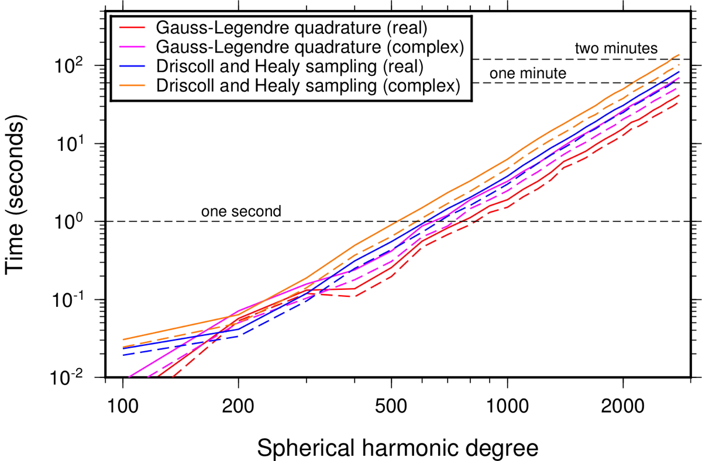

| HOME | DOWNLOAD | DOCUMENTATION | FAQ |
> Home > Documentation
Speed
The figure below shows the amount of time in seconds that it takes to perform the forward and inverse spherical harmonic transform of a gridded data set as function of the spherical harmonic bandwidth. Results are shown for both the real and complex Gauss-Legendre quadrature (SHExpandGLQ, MakeGridGLQ, SHExpandGLQC and MakeGridGLQC) and Driscoll and Healy (SHExpandDH, MakeGridDH, SHExpandDHC and MakeGridDHC) routines. These calculations were performed on a Mac Pro 2.7 GHz 12-Core Intel Xeon E5 using 64 bit executables and level 3 optimizations. For the real Gauss-Legendre quadrature routines, the transform time is seen to be on the order of one second for degrees close to 800 and about 38 seconds for degree 2800. For the real Driscoll and Healy routines, the transform time is close to a second for degree 650 and about 76 seconds for degree 2800. The complex routines are slower by a factor of about 1.4.
Figure 2. Time to perform the forward and inverse spherical harmonic transform as a function of spherical harmonic bandwidth using real and complex Gauss-Legendre quadrature and Driscoll and Healy routines.
> Home > Documentation
| Laboratoire Lagrange | Observatoire de la Côte d'Azur | © 2016 SHTOOLS |